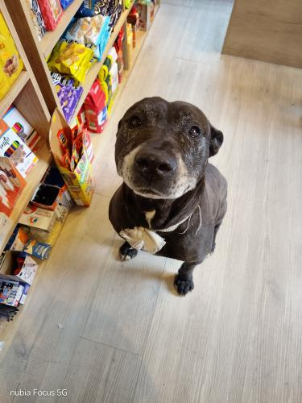

Encontré este perro en Parque Rivadavia
Lo estoy cuidando por ahora. Es un perro de 8 años aproximadamente, de tamaño grande. Tenía un collar marrón, está bien alimentado y castrado. Es muy mimoso y compañero…
🐶 Si creés que es tuyo o tenés información, completá los siguientes campos para contactarnos: